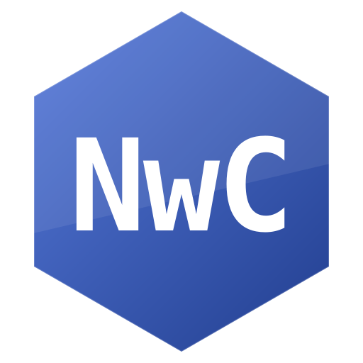

It was hobby project that becomed into Big operating system
Made from scratch
Writen on C + nasm
And run .nwo files inside on OS

Our own programming language, built for NwOS
#include <nwc.h>
1A main() {
nw::out << "Hello, NwOS!\n";
return 0;
}Write programs in a clean, C-like syntax designed specifically for NwOS
The NwC compiler produces native .nwo binaries that run directly on the OS
Written in C + nasm — compiles and runs right inside NwOS
It has source code on github
Made by User0140155
All releases on GitHub
All releases page →